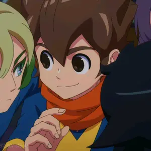

Play
Play
Kawaii motion portfolio
用可爱动画召唤一点无敌能量
我是无敌暴龙神，创作卡通动漫风格的视频作品、动态视觉和治愈系小短片。名字听起来很强，画面可以很软。

闪电系头像已就位
关于设计师
我是无敌暴龙神，专注让视频既可爱、又有记忆点。
擅长把灵感整理成角色、分镜、节奏和氛围。无论是温柔的小动物短片、动漫感片头，还是适合社交平台传播的视频展示，都希望它看起来轻松、明亮、有一点小小的冲击力。
Video works
近期视频作品
What I make
从一个脑洞到一支完整的可爱视频
动漫风格短片
把想法、人物、品牌或生活片段做成轻松好看的短视频，让观众愿意停下来。
卡通角色动态
小动物、头像角色、表情动作、循环动效和片头片尾，适合长期运营和系列化发布。
作品展示整理
封面、标题、简介、观看入口和项目节奏整理，把视频作品清楚又有个性地展示出来。
Process
合作像升级打怪一样清楚，每一步都有画面感
- 锁定目标 整理主题、受众、发布平台、时长和必须出现的信息。
- 启动分镜 用情绪板、关键帧和节奏草图确认整体感觉。
- 完成上线 完成视频链接、封面、展示文案和页面入口，保证能直接使用。
Start a sweet project
先来抖音主页看看无敌暴龙神的动态吧
邮箱暂时不公开，后续如果需要合作入口，可以再换成表单、私信提示或其他联系方式。